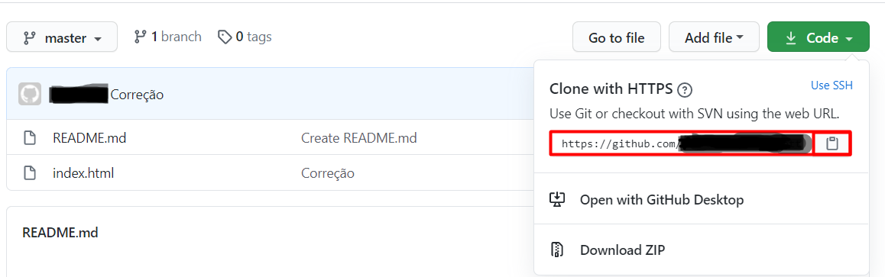

Visão Geral
Git pronuncia-se /git/ (ou pronuncia-se /djit/ em inglês britânico) é um sistema de controle de versões distribuído, usado principalmente no desenvolvimento de software, mas pode ser usado para registrar o histórico de edições de qualquer tipo de arquivo. O GIT foi inicialmente projetado e desenvolvido por Linus Torvalds para o desenvolvimento do kernel Linux, mas foi adotado por muitos outros projetos.
Cada diretório de trabalho do GIT é um repositório com um histórico completo e habilidade total de acompanhamento das revisões, não dependente de acesso a uma rede ou a um servidor central. O GIT também facilita a reprodutibilidade científica em uma ampla gama de disciplinas, da ecologia à bioinformática, arqueologia à zoologia.
O GIT é um software livre, distribuído sob os termos da versão 2 da GNU General Public License.
Instalação
Para efetuar o download do GIT, você pode clicar aqui, e selecionar uma das opções de download conforme destacado na imagem a seguir.

Vinculando ao GITHUB
Após fazer o download e instalação do GIT conforme desejado, na página do repositório criado no GITHUB, e pode ser copiado o endereço do repositório.

Comandos Básicos
Ajuda
Serve para obter ajuda sobre as funcionalidades de cada comando.
Como utilizar:
git help add
git help commit
git help <qualque_comando_git>
Configuração Geral
Para setar um usuário:
git config --global user.name "Emily Fitzlaff"
Para setar um e-mail:
git config --global user.email fitzlaff.emily@unidavi.edu.br
Listar configurações:
git config --list
Repositório Local
Criar um novo repositório:
git init
Adicionar um arquivo/diretório específico:
git add index.html
Adicionar todos os arquivos/diretórios:
git add .
Adicionar um diretório específico:
git add meu_diretorio
Commitar arquivo/diretório
Comitar um arquivo
git commit meu_arquivo.txt
Comitar vários arquivos
git commit meu_arquivo.txt meu_outro_arquivo.txt
Comitar informando mensagem
git commit meuarquivo.txt -m "minha mensagem de commit"
Visualizar histórico
Exibir histórico:
git log